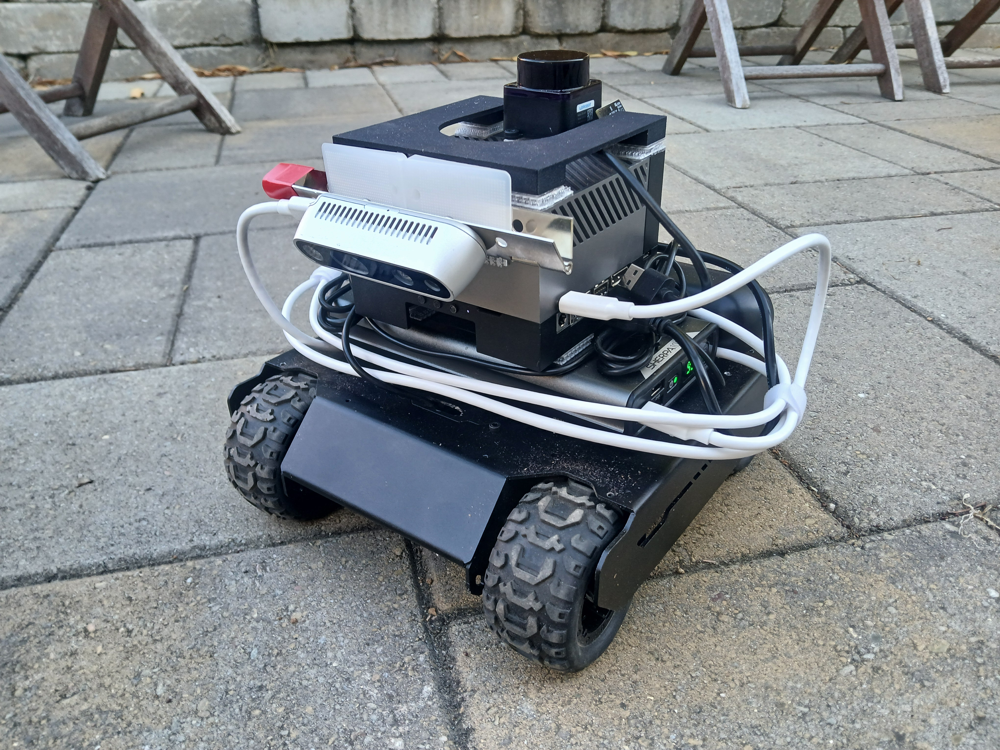
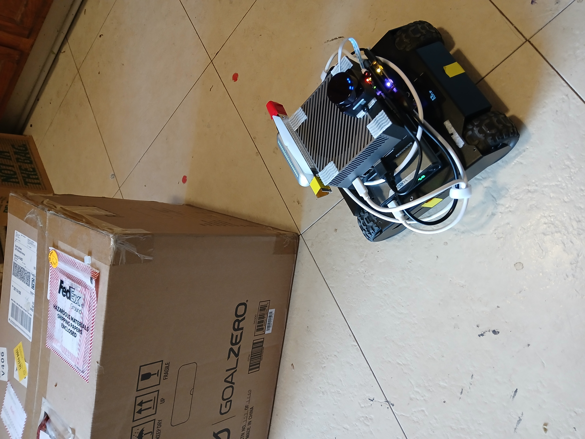
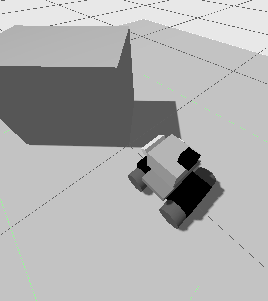
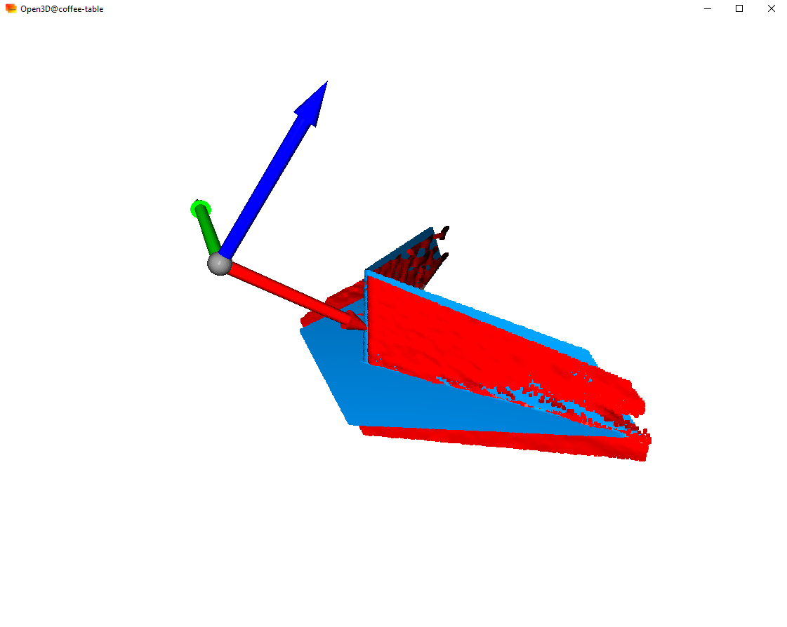
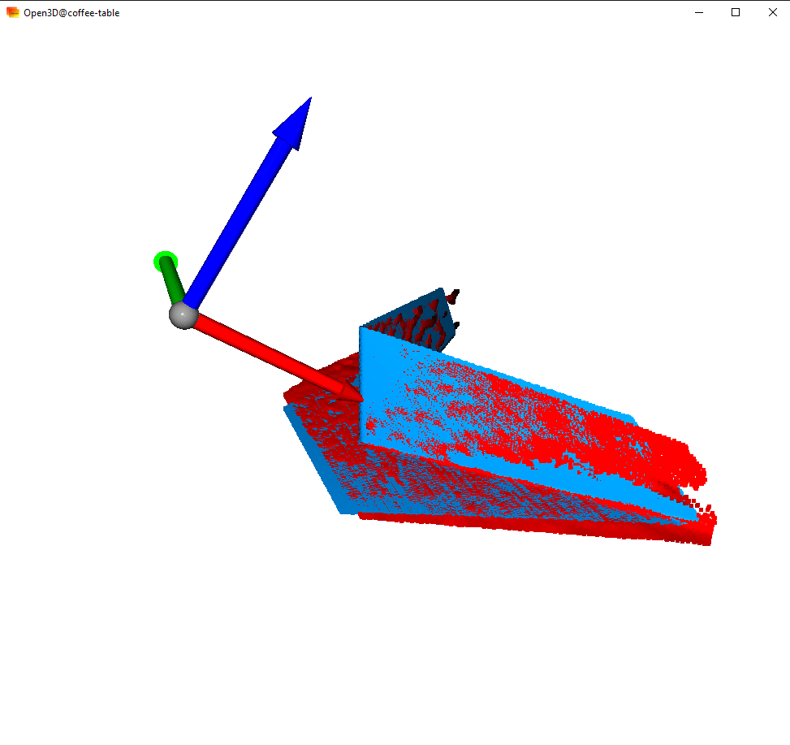
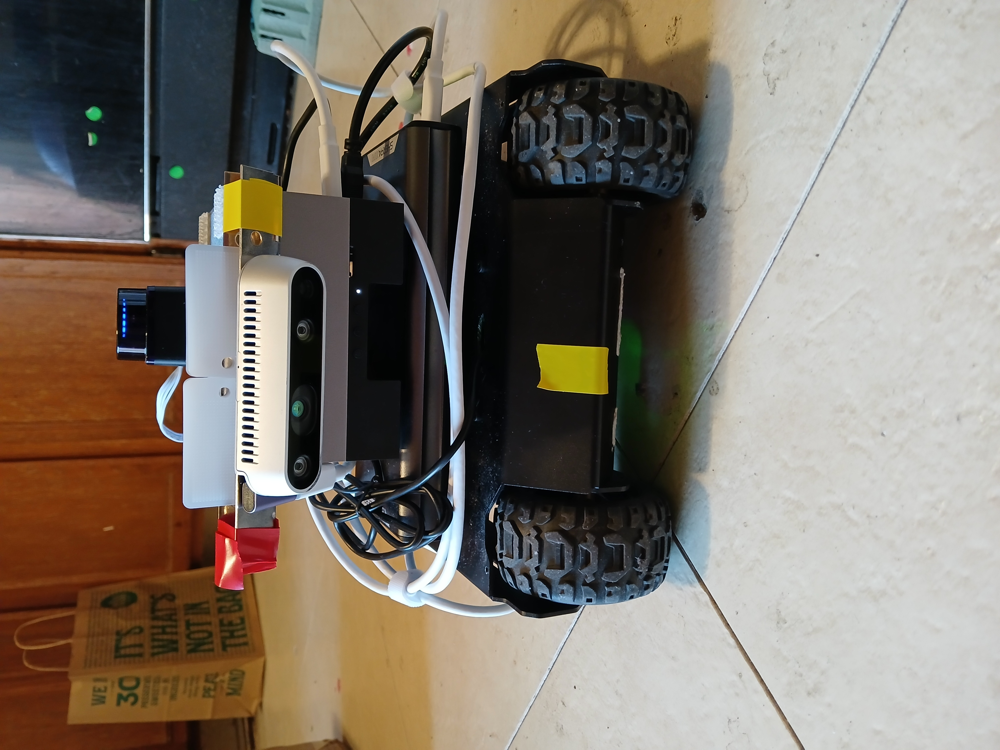
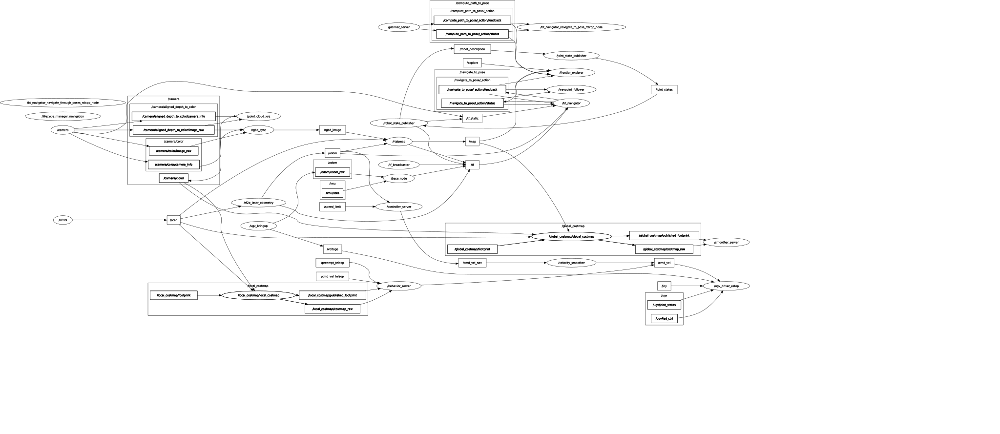
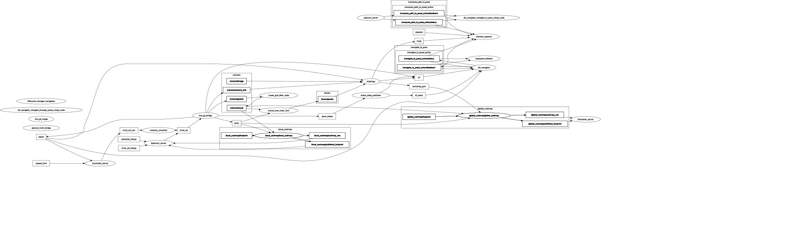
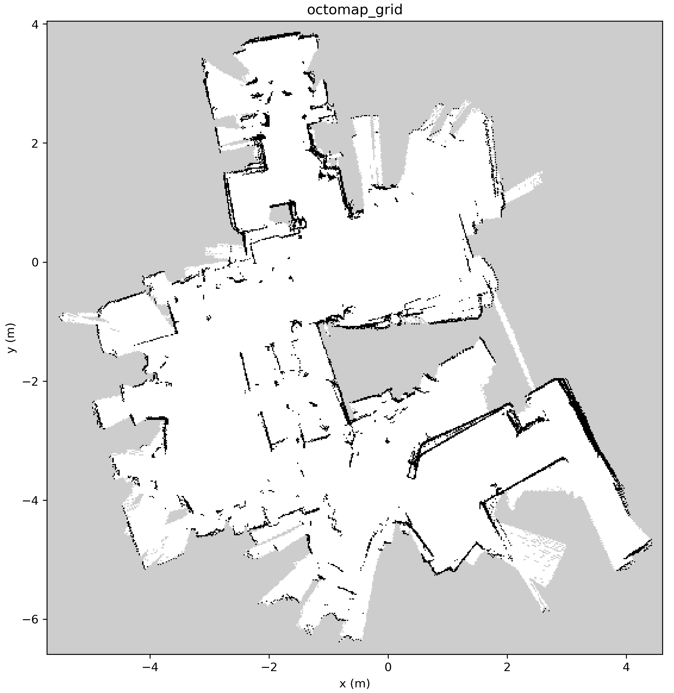
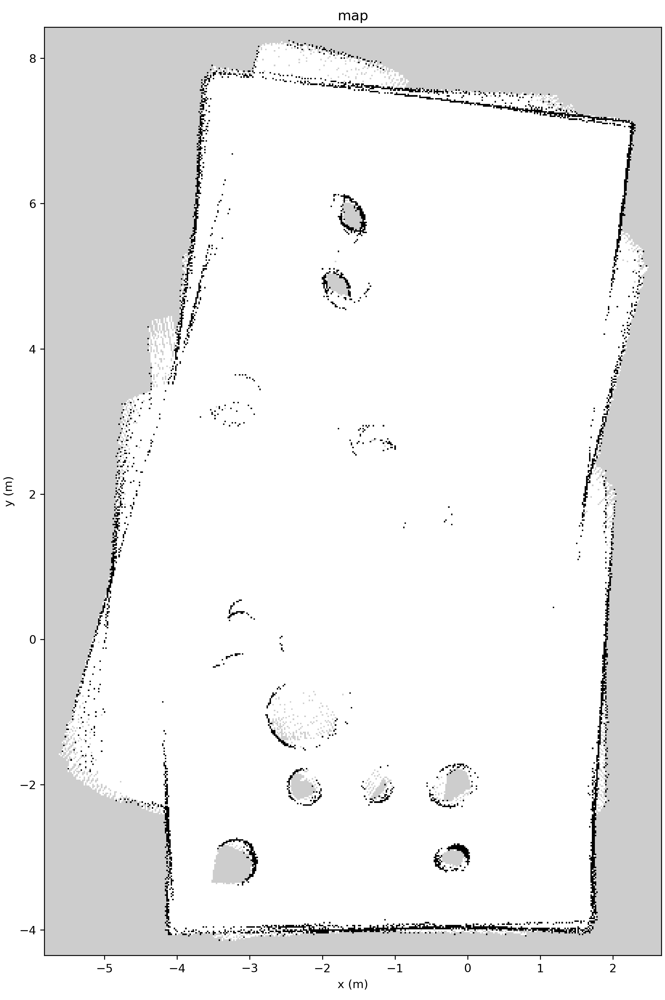

Project Indoor Explorer
Intent of this page
This page attempts to document the project from a conceptual perspective. Code installation and usage are left (mostly) to the parent repository at ugv_ws or repositories referenced therein.
Project Goal
Autonomously explore and map an indoor environment in simulation and reality. Prior knowledge of the environment - or previous exploration and mapping by a human operator - is not allowed.
Hardware
Robot UGV02x (my versioning!) is based on the Waveshare UGV02 skid-steer platform (ref). The platform is customized via an NVIDIA Orin AGX compute module, with usb-connected lidar and depth-camera, supported by a 100Wh Li-Ion battery (see the parts list in table 1). The system diagrams in mobile and dev configurations are shown in figures 1 and 2.
flowchart BT
A[UGV02] <--> |usb| B[usb_isolator]
B <--> |usb| C[Orin]
D[battery] --> |usbc| C
E[lidar] --> |usb| C
F[depth camera] --> |usbc| C
C <--> G[802.11ac\nwireless]
C <--> H[500GB\nNVME\nSSD]
flowchart BT
AA["12.6V\nAC Adapter"] --> |charging port| A
A[UGV02] <--> |usb| B[usb_isolator]
B <--> |usb| C[Orin]
D[battery] --> |usbc| C
E[lidar] --> |usb| C
F[depth camera] --> |usbc| C
C <--> G["wired\nethernet"]
C <--> H[500GB\nNVME\nSSD]
I[19.5V\nAC Adapter] --> C
In dev config, the Orin is connected via wired ethernet and is powered from an external transformer from 120VAC. The purpose of the USB isolator is to isolate the battery system of the Waveshare UGV02 robot from the Orin/sensor battery shown - they only share a ground. In fact, the USB isolator had to be electrically modified to disconnect the supply voltage passthrough from the orin. Any external battery to buffer the UGV02 batteries should be plugged into the UGV02 charging port. The battery configuration shown results in many hours of robot operation.
The Waveshare UGV02 contains a ESP32 microcontroller with connected IMU, 4 motor PWM controllers, and 2 wheel encoders (on the front wheels). See figure 3.
digraph G {
layout=neato; overlap=false; splines=true; node [shape=box, fixedsize=false, width=1, height=0.5];
L1 [label="LF motor/\nencoder"] [pos="0,1!"];
L2 [label="LR motor"] [pos="0,0!"];
C1 [label="USB/UART"][pos="2,1.5!"];
C2 [label="ESP32\ncontroller"][pos="2,0.5!"];
C3 [label="IMU"][pos="2,-0.5!"];
C4 [label="3x18650\nbatteries"][pos="2,-1.5!"];
R1 [label="RF motor/\nencoder"] [pos="4,1!"];
R2 [label="RR motor"] [pos="4,0!"];
L1 -> C2; R1 -> C2; C2 -> C1; C3 -> C2; C4 -> C2; L2 -> C2; R2 -> C2;
}
The Bill of Materials for UGV02x follows (table 1).
| Manuf. | Model | Description | Count |
|---|---|---|---|
| Waveshare | UGV02 | skid-steer robot platform | 1 |
| NVIDIA | AGX Orin 64GB | Compute node | 1 |
| Samsung | 970 EVO | M.2 SSD 500GB | 1 |
| LDRobot | STL-19P | 2D lidar | 1 |
| Intel | Realsense D435 | RGBD camera | 1 |
| Jhoinrch | Rho 5 Mark II | USB Isolator (modified to remove Vcc connection on the UGV02 side) | 1 |
| Goal Zero | Sherpa 100PD | Li-Ion 100 Wh rechargeable battery | 1 |
| Samsung | INR 18650-35E | 18650 Li-Ion rechargeable flat-top (not button-top) battery. 3500mAh. | 3 |
| Central Computers | USB 3.2 Gen 2 Type-C Cable | 3 ft. Depth Camera/Orin Power cable (cable ratings: 20Gbps, 20v 5A) | 2 |
| Central Computers | USB Type-C 90 degree Male to Female Adapter | Depth Camera data cable management adapter (ratings: 40Gbps, 48v 5A) | 2 |
| DongGuan Simer Electronics Co, LTD | SK90B195462 AC Adapter | Orin power supply. Output 19.5V @ 4.62A | 1 |
| China | RXW-0698-12.6V2A batter charger AC Adapter | UGV02 battery charger power supply. Output 12.6V @ 2A | 1 |
| 3M | RF6730 Scotch Extreme Fasteners | Adhesive-backed high-strength velcro 1x3 inch strip pairs for robot component connections | 8 |
Firmware: UGV02 ESP32
For this project, the UGV02 is running the ugv_base_ros ESP32 firmware, applied to the robot via the ESP32 firmware updater. See the Waveshare UGV02 Wiki section on firmware updates for more details. This firmware is quite accessible via the Arduino IDE and future tweaks are anticipated. For example, the PWM rate seems awfully high (100kHz). Figure 4 shows the basic functions of the firmware as it applies to the ROS2 interface in terms of wheel control.
flowchart LR
subgraph O["Orin ugv_main ROS2 pkgs"]
direction TB
A["ROS2\n/cmd_vel\ntopic"] --> BLR["inverse\nkinematics"]
BLR --> CLR["L/R\nang. vel"]
CLR --> DLR["JSON"]
end
subgraph FW["UGV02 ESP32 firmware"]
direction BT
D["L wheel encoder"] --> CL
B["L/R ang. vel\ntargets"] --> CL["L wheel\nang. vel PID"]
B --> CR["R wheel\nang. vel PID"]
E["R wheel encoder"] --> CR
CL --> LP["L wheel PWM"]
CR --> RP["R wheel PWM"]
end
DLR --> |usb| B
Since the inverse kinematics are on the ROS2 side, I do some nominal understeer compensation by inflating the true lateral wheel separation (by a factor of 2). Figure 5 shows the firmware functions regarding transmission of robot state back to ROS2 via USB.
flowchart LR
subgraph FW["UGV02 ESP32 firmware"]
direction BT
D["IMU"] --> E["JSON polling\nencode"]
F["L wheel\nencoder"] --> E
G["R wheel\nencoder"] --> E
H["voltage"] --> E
end
subgraph O["Orin ugv_bringup ROS2 pkgs"]
direction TB
OB["JSON polling\n(1kHz) decode"]
OB --> T1["ROS2\n/imu_data_raw\ntopic"]
OB --> T2["ROS2\n/imu_mag\ntopic"]
OB --> T3["ROS2\n/odom_raw\ntopic"]
OB --> T4["ROS2\n/voltage\ntopic"]
end
E --> |usb| OB
Software packaging: Linux
UGV02x Linux software consists of existing ROS2 Humble packages, custom ROS2 device and project packages, and modified versions of the Waveshare UGV02 ROS2 packages/workspace Waveshare ugv_ws. A typical setup for the mobile (real) robot environment is shown in figure 3. All Linux compute platforms are running Ubuntu 22.04 and ROS2 Humble. No containers or VMs are used in this project. Generally, simulation and development are performed on a capable (memory, disk, compute, etc.) Linux computer. The configuration of this computer also makes it useful as a top level orchestrator/observer for exploration and mapping. The details of navigation and exploration algorithms used in this project are discussed in the Exploration and Navigation section below.
The UGV02x Orin ROS2 SW stack
- ugv_ws (ROS2 workspace)
- custom package configuration files
- ROS2 packages (github.com/StuartGJohnson)
- ugv_main
- point_cloud_tools
- frontier_explorer
- ROS2 packages (github)
- rf2o_laser_odometry
- ldlidar_stl_ros2
- ROS2 Humble (apt install)
- nav2
- rtabmap
- realsense2
- ...
- Ubuntu 22.04 LTS
The Linux manager/dev/simulation node SW stack
- ugv_ws (ROS2 workspace)
- exploration_orchestrator.py
- custom package configuration files
- ROS2 packages (github.com/StuartGJohnson)
- ugv_main
- point_cloud_tools
- frontier_explorer
- rviz_record
- gazebo_differential_drive_robot_4wheel
- ROS2 packages (github)
- rf2o_laser_odometry
- ROS2 Humble viz and simulation
- Gazebo Garden
- rviz2
- rqt
- ROS2 Humble (apt install)
- nav2
- rtabmap
- ...
- Ubuntu 22.04 LTS
A mobile deployment utilizing 802.11ac wireless (as supported by the Orin AGX out-of-the-box) is shown in figure 6. The manager computer and wireless router can be run entirely on battery - for remote operations (a different project!).
digraph G {
layout=neato; overlap=false; splines=true; compound=false;
node [shape=box, fontname="system-ui"];
subgraph cluster_L {
label="manager";
style="rounded,dotted";
color="#60a5fa"; penwidth=2;
L0 [label="", shape=box, style=invis, fixedsize=true, pos="0,2.5!", width="1.75",height="0.25"];
L1 [label="wireless\nrouter",pos="0,1.5!",fixedsize=false];
L2 [label="linux host",pos="0,0.5!",fixedsize=false];
L3 [label="battery\n(optional)",pos="0,-0.25!",fixedsize=false];
L4 [label="",shape=box, style=invis, fixedsize=true, pos="0,-0.75!", width="1.75",height="0.25"];
}
subgraph cluster_R {
label="UGV02x";
style="rounded,dotted";
color="#60a5fa"; penwidth=2;
R0 [label="", shape=box, style=invis, fixedsize=true, pos="3.5,2.25!", width="1.75",height="0.25"];
R1 [label="PCI-E\n802.11ac\nwireless", pos="3.5,1.75!", fixedsize=false];
R2 [label="Orin AGX", pos="3.5,0!", fixedsize=false];
R3 [label="", shape=box, style=invis, fixedsize=true, pos="3.5,-0.5!", width="1.75",height="0.25"];
}
// Edges
L1 -> L2 [dir=both];
R1 -> R2 [dir=both];
L1 -> R1 [dir=both, style=dotted];
}
Simulation
For the simulated goal, procedurally generated worlds are used to test appropriate functionality in the SW and HW stack. This is described in World Generation. Figure 7 shows a simulated scene which has been tuned to provide a set of obstacles of varying heights through which the robot must explore to complete the project goal. These objects are not all imaged in the robot lidar - some are below the lidar height and will only be imaged in the depth camera - when the robot is nearby.
The simulated UGV02x robot is provided via XACRO file in Gazebo UGV02x robot and is shown in figure 8. This robot model is intentionally not photo-realistic. The point of this robot model is to accurately represent the spatial and inertial aspects of the robot with a minimum of geometric complexity. The robot XACRO file is also used to compute the static transforms of the real robot during operation.
Simulation is performed via the (Ignition) gz sim version of Gazebo - which, for ROS2 humble, is Gazebo Garden. This is not to be confused with Gazebo Classic or later versions of (Ignition) Gazebo. Simulation via IsaacSim was partially completed and partially successful, but has been set aside due to fundamental limitations of IsaacSim - specifically, IsaacSim does not support the necessary nuances of friction which allow the robot wheels to realistically slip sideways - a critical feature for skid-steer robots. Well, skid-steer robots that turn.
For immediate comparison, I include a photo of the real robot (in mobile configuration) in figure 9.

Odometry: sim vs real
For the purposes of timely project completion, odometry is computed differently in simulation and reality. A future project will involve - minimally - fusing IMU and odometry data for a low-level estimate of odometry. The necessary data acquisition and analysis was deemed a rabbit-hole of excessive depth for the purposes of this project.
flowchart TD
A["/scan"] --> B[rf2o_laser_odometry]
B --> C["/odom"]
B --> D["/tf"]
flowchart TD
A[Gazebo diff drive] --> B["/odom"]
A --> C["/tf"]
As shown in figures 10 and 11, odometry computation - and subsequent updates to the /tf tree - happen differently for the real and simulated robots. For the real robot, odometry is entirely calculated from the laser scan updates via rf2o_laser_odometry. As mentioned above, this is a temporary workaround. For the simulated robot, odometry is computed from the wheel velocities resulting from the /cmd_vel commands sent to the robot. The wheel separation parameter of the simulated robot kinematics has been calibrated (increased) so that - given the wheel slip settings in the simulator - the simulated robot motion follows the odometry fairly closely. This assumes the slip characteristics of the floor are fixed and known. From the point of view of the ROS2 nav2 SW stack, it is useful to review the purpose of odometry: odometry for nav2.
Depth camera and Lidar processing: sim vs real
Depth camera and Lidar processing is implemented differently for the simulated and real robots. This stems from two issues:
- Gazebo Garden (a sub-version of Gazebo Fortress) does not easily allow for the processing of the depth image stream into point clouds. As far as I can tell, Gazebo is not providing the proper camera extrinsics to properly convert rgba or depth images into a point cloud. However, Gazebo Garden DOES provide a proper point cloud directly. I attempted to address this issue via introducing a camera optical frame in the transform tree (as suggested in the ROS2 Gazebo community), but this did not fix the problem (it did improve it!).
- Conversely, the (actual) Intel D435 ROS2 package does NOT provide a working point cloud directly from the camera. This appears to be a very version-specific issue, as an apt update during robot development eliminated my ability to get point clouds from the camera. Driver regression did not seem to address the issue. Never a dull moment!
These two problems conspire to make the processing different for sim and real robots. The solution I worked out is shown in figures 12 and 13. A full dump of the real-time ROS2 computation graphs (from rqt) are provided in the section ROS2 Exploration and Navigation section below.
flowchart TD
A["camera"] --> C["/rgb"]
A --> D["/depth"]
B[lidar] --> E["/scan"]
C --> F[rgbd_sync]
D --> F
D --> G[point_cloud_xyz]
F --> H[rgbd_image]
G --> I["/camera/cloud"]
H --> J[rtabmap]
E --> J
subgraph K[NAV2]
direction LR
L[global_costmap]
M[local_costmap]
end
E --> L
E --> M
I --> L
I --> M
J --> K
flowchart TD
A["camera"] --> C["/rgb"]
A --> D["/points"]
B[lidar] --> E["/scan"]
D --> F[voxel_filter]
F --> G["/camera/cloud"]
G --> H[point_cloud_fuser]
E --> H
C --> I[rtabmap]
H --> I
subgraph J[NAV2]
direction LR
K[global_costmap]
L[local_costmap]
end
E --> K
E --> L
G --> K
G --> L
I --> J
Depth camera calibration
The Intel Realsense camera is not quite viewing the world from the perspective one might expect. In particular, when running in the mode used in this project, the resulting depth cloud is not centered on the camera housing - it is more or less centered on the left camera aperture. One way to deal with this is to develop a calibration procedure for the static transform tree of the depth camera sensor.
Exteroceptive sensor transform tree
The real and simulated robots almost share an xacro file - that is, the file which defines the component physical relationships and properties. The difference between the two files are the transform settings of a calibration joint for the depth camera. This calibration is defined in both files. The simulated robot has a unit calibration transformation, whereas the real robot does not. The goal of calibration is to find the calibration transform. In this section, we only discuss the depth camera calibration. Also, we assume that the intrinsic and extrinsic calibration(s) of the depth camera have already been done - there are tools for this in the intel SW.
flowchart BT
BF(["base_footprint"]) --> BFJ["base_footprint_joint"]
BFJ --> BL(["base_link"])
BL --> BJ["battery_joint"]
BJ --> BAL(["battery_link"])
BAL --> OJ["orin_joint"]
OJ --> OL(["orin_link"])
OL --> LJ["lidar_joint"]
LJ --> LL(["lidar_link"])
OL --> DJ["d435_joint"]
DJ --> CPL(["camera_pre_link"])
CPL --> DCJ[["d435_calibration_joint"]]
DCJ --> CL(["camera_link"])
Calibration process
The process for determining the calibration transform is as follows:
- Set up the real robot in the calibration scene. See figure 15.
- Bring up the robot sensors:
-
ros2 launch ugv_bringup bringup_sensors.launch.py
-
- Grab a point cloud from the depth camera in the camera_pre_link frame:
-
python3 save_pcd_tf.py -t /camera/cloud -F camera_pre_link -o cloud_real_bin_cal_repo1.pcd --binary --latest
-
- Shut down the real robot.
- Bring up the sim robot (sensors) in the simulated calibration scene (figure 16):
-
ros2 launch ugv_bringup bringup_sensors_sim.launch.py
-
- Grab a point cloud from the simulated depth camera in the camera_pre_link frame:
-
python3 save_pcd_tf.py -t /camera/cloud -F camera_pre_link -o cloud_sim_bin_cal_repo1.pcd --binary --latest
-
- Shut down the simulated robot.
- Register the two point clouds, and compute a transform in the camera_pre_link frame. I use ICP in the point-to-plane mode (see the source code mentioned):
-
python3 register_pcd.py -s cloud_real_bin_cal_repo1.pcd -t cloud_sim_bin_cal_repo1.pcd -d
-
- This results in the following (for example):
ICP fitness: 1.0 RMSE: 0.010631891033362824 T_sensor_to_scene: [[ 9.99930746e-01 -4.64087563e-03 1.08151039e-02 -8.72929755e-04] [ 4.43469507e-03 9.99809444e-01 1.90107587e-02 2.17824679e-03] [-1.09012695e-02 -1.89614804e-02 9.99760784e-01 5.88481766e-03] [ 0.00000000e+00 0.00000000e+00 0.00000000e+00 1.00000000e+00]] xyz/rpy: [-0.00087293 0.00217825 0.00588482] [-0.01896374 0.01090149 0.00443497] - Update the real robot xacro file:
<!-- camera calibration joint --> <joint name="d435_calibration_joint" type="fixed"> <origin xyz="-0.00087293 0.00217825 0.00588482" rpy="-0.01896374 0.01090149 0.00443497"/> <parent link="camera_pre_link"/> <child link="camera_link"/> </joint> - The sim robot xacro file does not change:
<!-- camera calibration joint --> <joint name="d435_calibration_joint" type="fixed"> <origin xyz=0 0 0" rpy="0 0 0"/> <parent link="camera_pre_link"/> <child link="camera_link"/> </joint>
The above calibration process also works if I offset the camera housing (to the left, for example) in the shared part of the robot and simulated xacro file. As well, the process will also work if I do not offset the real camera to the left of center (as I have done - see figure 19). I have decided to offset the real camera so that it produces a more left-right symmetrical depth FOV - however, it still provides more depth points on the left (see figure 18). The results of the calibration process are shown in the following 4 figures.





Exploration and Navigation
Exploration and Navigation: Algorithm overview
The computation graphs for the real and simulated robot are shown in figures 20 and 21. These are constructed automatically via rqt from a running ros2 SW stack. Click on them and pan and zoom away.

The detail in these graphs (figures 20 and 21) is pretty challenging to digest, but becomes increasingly useful as you tune up your SW stack to the goals at hand. Zoomed-in parts of this computation graph are shown below.

In order to attain the project goals, I have used a custom autonomous frontier exploration implementation Frontier exploration. While there are many similar frontier exploration packages out there, many of them depend on an initial exploration of the environment by a human (tele)operator. This is not allowed by the project goals. The explore_lite node is an example of this - while it doesn't strictly demand initial human exploration, this node implicitly assumes that it makes sense to characterize frontier areas by their centroids. Well, what if you start out in a uniformly unknown environment? You are at the centroid of the frontier already!
The frontier_explorer node depends on Nav2 to interact with the environment as the frontier_explorer generates and attempts goals. Nav2 is a complex SW stack with many interacting components. A Nav2-based project involves selecting, assembling and tuning navigation algorithms. Some algorithms may eventually yield better results, but are more challenging to tune. The simplified diagram below (figure 22) attempts to represent Nav2 operation for the purposes of this project.
flowchart TD
A["rtabmap (SLAM)"] --> B["octomap_grid"]
A --> TF1["map --> odom"]
OD["/odom"] --> TF2["odom --> base_link"]
TF1 --> TF["/tf"]
TF2 --> TF
TF --> GC
B --> GCS
D["/scan"] --> GCVG
E["/camera/cloud"] --> GCVG
subgraph GC["Nav2 global_costmap"]
GCS["static_layer"]
GCVG["voxel_layer"]
GCS --> GCI["inflation_layer"]
GCVG --> GCI
end
FE["frontier_explorer"] --> G
G["Goal"] --> NPP
GCI -->|2D map| NPP["Nav2 Grid Based Path Planner"]
NPP --> T["path to goal"]
TF --> LC
D["/scan"] --> LCVG
E["/camera/cloud"] --> LCVG
subgraph LC["Nav2 local_costmap"]
LCVG["voxel_layer"]
LCVG --> LCI["inflation_layer"]
end
T --> NP
LCI --> |2D map| NP["Nav2 Controller:\nRotation Shim Controller +\nRegulated Pure Pursuit"]
NP --> VS["Nav2 Velocity Smoother"]
VS --> CV["/cmd_vel (robot)"]
frontier_explorer generates goals for Nav2 until the frontiers in the map are exhausted. Fig 23 shows (roughly) the functionality of frontier_explorer.
flowchart TD
A["rtabmap (SLAM)"] --> B["/map"]
B --> F["frontier_explorer"]
F --> G["goals"] --> N2["Nav2 Planner"]
G -.-> RV["rviz2"]
F --> H["blacklisted regions"] -.-> RV
F --> I["frontier regions"] -.-> RV
frontier_explorer at work. Rviz2 may not be running on the same host (i.e, the (real) robot).Figure 23 also shows the production of map overlays (goals, blacklisted regions and frontier regions) which are displayed via rviz2 (generally on a non-robot host on the LAN). These products (as well as Nav2 Rviz2 products) are shown in the exploration movies in the results section below.
Exploration and Navigation: Algorithm tuning
There are a lot of parameters and configurations involved in a functioning exploration SW stack. There are 3 principal components to be tuned: frontier_explorer, rtabmap and Nav2 . Nav2 tuning includes the Nav2 planner, the Nav2 controller, and the Nav2 behavior tree (BT). The exact settings for these are included in the files in the parent github repo:
- Settings files
- frontier_explorer (the defaults were used). See frontier_explorer.cpp
- Nav2
- rtabmap
Some explanation and general discussion of these configuration files is called for:
frontier_explorerhas numerous numerical and behavior settings- plan_period and replan_cooldown should be set to prevent oscillatory behavior as the map evolves quickly. In fact, the main enemy of effective exploration is an excessively aggressive replan schedule.
- The code - with current settings - prechecks possible goals by 1) checking if the goal is within the same connected region of unoccupied map cells as the robot, and 2) asking Nav2 if the goal is reachable. It's not entirely clear that these are good ideas if we have a map which is changing and possibly in error during exploration (due to poor loop closure in rtabmap, say). Relevant settings are: use_connectivity_filter and precheck_current_goal_on_map_update.
- rtabmap is used to build a 3D model of the environment with the settings given.
- In order to produce 2D map products for Nav2 and frontier_explorer, obstacle/ground heights need to be set. These settings are redundant with Nav2 costmap settings.
- Grid/Sensor, Reg/Strategy and the subscribe_* settings need to be coordinated and set with care
- Nav2 local costmap. The local costmap should reflect recent, nearby obstacles. Notes:
- Setting indentation in the files is critical. Settings at the wrong indent are silently ignored.
- For each data source,
observation_persistence(in seconds) should be non-zero, but not too large. Large values will cause errors as Nav2 attempts to process objects outside the local map. Withoutobservation_persistence, the planner forgets obstacles outside of the field of view of the sensors immediately! This makes it a challenge for navigation in tight spots - or even near obstacles. Detailed nearby obstacle information is only available in the field of view of the depth camera - a modest-sized patch of ground immediately in front of the robot. Considerations for the global costmap are a bit different (read on). - For inputs to the (3D) VoxelLayer, each data source should have its z-range specified carefully. For example, the 2D lidar should not generally clear obstacles from the map which have been detected below the 2D lidar height (i.e., by the depth camera).
- Obstacle height settings are redundant with rtabmap settings.
- Nav2 global costmap. The global costmap reflects the accumulating (3d or 2d) occupancy map AND recently observed obstacles. It is important that:
- For each data source,
observation_persistence(in seconds) should (probably) be larger than for the local costmap (the global costmap is updated much more slowly), however: - The long term memory of the global costmap is the selected occupancy map - see the
nav2_costmap_2d::StaticLayerincantation. - In my case, I want the global costmap to also store low obstacles captured in the depth camera. So, I use rtabmap's 3D->2D octomap_grid as the occupancy map input to the static layer.
- Obstacle height settings are redundant with rtabmap settings.
- For each data source,
- Nav2 planner.
- The choice of nav2 planner can be the source of much tuning effort. Originally I was using the
DWBLocalPlanner. While this planner might be more robust once tuned, I found it to be a challenge to tune it's many parameters. Using the much simpler RegulatedPurePursuitController solved the tuning issues for me. - While challenging - and seemingly unnecessary - in simulation, the RotationShimController appears to be useful for navigation in tight spots, since the robot can rotate in place before beginning on a trajectory. But, more experimentation may prove otherwise.
- The
planner_server:GridBased:allow_unknownsetting (when false) prevents the route planner from planning routes through unknown map areas. It is quite exciting to see the planner plan a route outside the structure! Umm, don't do that. Oh, and don't forget to close the doors if you want have an indoor exploration project!
- The choice of nav2 planner can be the source of much tuning effort. Originally I was using the
- Nav2 general tuning challenges
- With the full SW stack, in simulation, I had a lot of challenges with timing. I had to introduce various
transform_tolerancesettings (these are in seconds). Make sure all your components haveuse_sim_timeset to true in simulation (mine all seemed to be). This was an unsatisfactory experience with the full stack in simulation, IMHO.
- It may be useful to look over the (Nav2) algorithm choices for a given component and pick the one with the fewest parameters to tune. Then perhaps work you way back towards more complex (although possibly more robust) solutions.
- With the full SW stack, in simulation, I had a lot of challenges with timing. I had to introduce various
- Nav2 BT
Exploration and Navigation: Orchestration
The project goal is achieved by the exploration_orchestrator.py. This script coordinates and documents the exploration episode by interacting with the frontier_explorer and the rviz2 rviz_record plugin. On completion of exploration - while all nodes are still running - it also triggers the collection of a bag file snapshot of interesting quantities via rosbag2_py. Figure 24 shows this functionality when operating the real robot in mobile mode:
flowchart TD
subgraph R["Robot (Orin)"]
F["frontier_explorer"]
S["UGV02x nodes"]
F <--> S
end
subgraph E["manager"]
RV["rviz2 (rviz_record plugin)"]
O["exploration_orchestrator.py"]
O --> |"/rviz_record/start\n/rviz_record/stop"| RV
RV --> EM["Exploration movie"]
end
O --> |"/explore"| F
F --> |"/exploration_done"| O
exploration_orchestrator at work.
Results
Indoor exploration
Figure 25 shows the results of indoor exploration by the robot. The environment is a bit cluttered with some low-lying (below-the-lidar) items. The robot cautiously discovers all reachable areas.
While the exploration is for the most part successful, there are some interesting behaviors to be addressed in upcoming projects. First, the lidar-based odometry does seem noisy, with the robot jumping around a bit (say ~2cm magnitude). This may be the reason the robot sometimes moves very hesitantly when trying to skirt around obstacles. An upcoming odometry/sensor fusion project will look into this. Second, there are some strips between floor sections in this indoor environment of roughly 1cm in height. As the robot passes over these, the depth camera sees phantom obstacles - the robot vertical is not corrected for (the floor ahead seems "high" as the robot rocks forward off the strip). This is potentially addressable via the on-board (camera and robot) IMUs, although Nav2 did not decide to make this phantom obstacle permanent - it cleared almost immediately as the robot ran on the flat floor after crossing the strip. This sort of thing will really become important on natural outdoor terrain. Finally, the map is fairly well constructed, although loop closure is clearly a challenge for rtabmap in various areas - with multiple images of walls appearing. This indoor environment is roughly U-shaped, and the arms of the U are distorted. But the basic connectivity of the open space is preserved.
Exploration of the simulated scene
Figure 26 shows exploration of the simulated scene. The simulated scene is rectangular with cylindrical obstacles of various radii (see figure 6).
This exploration shows that the robot can explore tight spaces and deal with obstacles only visible in the depth camera - it is quite adaptable with path replanning. Note that rtabmap has had significant issues with loop closure. For this combination of sensors and scene, it's possible a different SLAM algorithm would be better. The features in a simulated scene can be less rich - for this purpose I added the floor texture. But the primary problem for rtabmap may be the preponderance of flat floor in the depth map from the camera.
Other interesting exploration products: real robot/indoors
On completion of mapping, the orchestrator collects a number of 2D and 3D mapping products. octomap_grid (figure 27) is the 2d projection of the occupied space (figure 28).

Figure 28 is the final point cloud collected over the course of robot exploration. If you look carefully, there is some imaged clutter and imaging of the lower extremities of things. Figure 28 can be manipulated extensively via pan and zoom. Note there are several clusters of points at negative Z. Presumably the depth camera is still generating artifacts.
Other interesting exploration products: simulated robot/scene

Big picture Lessons learned
- Depth cameras can generate bad point clouds when viewing "shiny" floor at a low angle. For this project, many phantom obstacles were detected (indoors). While one can mitigate this issue to a large degree by tilting the camera down (30 degrees in my case), this has other effects. For example, rtabmap complains that it's ICP step is having issues with point clouds in open floor areas - robot turns can be poorly tracked by rtabmap. If the camera were pointing forward, it might have a rich(er) 3D environment in view.
- Skid-steer robots are a challenge:
- Subtle interactions occur between the tires and the ground when turning - the wheels must slip sideways for the robot to turn.
- This is a challenge to model in simulation.
- The relationship between wheel encoders and true (or even useful) odometry is complex and terrain dependent.
- Do not assume that your (custom) ROS2 robot will work out of the box. You are embarking on a voyage of experimentation.
- If you find a particular ROS2 component is difficult to tune, downgrade to a simpler component and try that.
- Every SW or HW component is a learning experience of possibly great depth - especially when it is not working!
- Many things in ROS2 fail silently, especially in the vicinity of parameter settings. Some dev process needs to be brought to bear here.
- QoS settings for ROS2 topics are still a bit mysterious to me. I think this may be to blame for some behavior quirks, like missing output after exploration in simulation.
- Calibrate all sensors for their position on the robot.
- The ROS2 Nav2 stack on my robot turned out to be quite safe - perhaps overly safe. I have not damaged any parts (yet).
- Your favorite GPT(s) can accelerate code development, but it is a chore to iterate on development and debugging with them. During code development, GTP4 and GPT5(better!) could be rather frustrating when coding to APIs - which is most of the time (I do NOT want to re-write any code if possible!). But, we still have to get used to each other!
Next steps
- A 3d lidar! (e.g. VLP16).
- Plumb the depths of odometry by sensor fusion for this robot.
- Define metrics for exploration performance.
- Explore more scenes.
- Go outside.